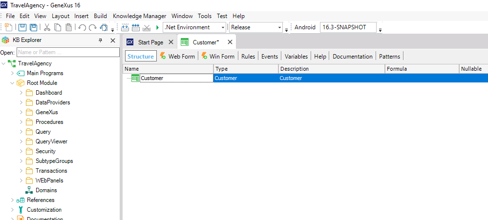
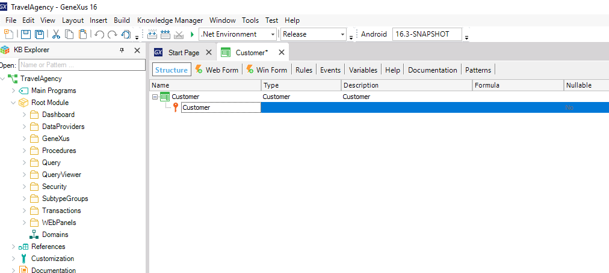
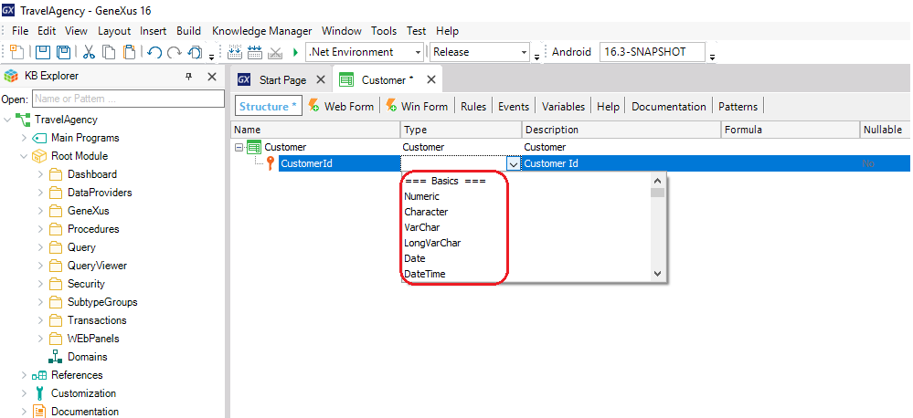

Attribute definition
In every Transaction structure, you have to define the attributes or fields that describe that object of reality. Suppose you were asked to record, for each customer, his/her name, last name, address, phone, and email. Therefore, the data that must be recorded for each customer matches the attributes that have to be created for the Customer Transaction. Note that the first line is created for you to enter the first attribute:  If you press the “dot” key on the keyboard, GeneXus automatically shows the Transaction name as a prefix in the attribute name:  You only have to type "Id" after the "Customer" prefix to complete the first attribute name. Next, you press the Tab key and choose the data type that will be stored for this attribute:  The data type combo box displays the data types available in GeneXus. For this attribute you can leave the default data type, that is to say: Numeric of 4 digits (with no decimals). Pressing Enter opens a new line for you to start creating the second attribute. We recommend pressing the “dot” key on the keyboard when creating a new attribute to obtain automatically the Transaction name as a prefix in the attribute name. This helps to avoid typing errors and to name attributes correctly.Note that an icon key is associated with the first line. The reason is that in every Transaction, an attribute – or set of attributes – must be set with an identifier or key role. VideosSee also |

| Backlinks | ||
| Applying property changes | Category:Attribute definition | Features of Reorganizations |
| Toc:GeneXus - Table of contents | Length property | What is error 403? |